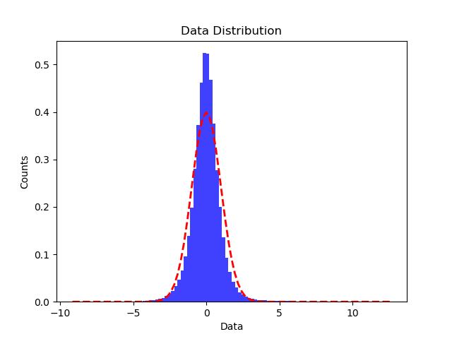

Note
Click here to download the full example code
Plot a given data distribution compared with a standard Gaussian distribution.¶
Out:
Opening raw data file /Users/psripad/mne_data/MNE-sample-data/MEG/sample/sample_audvis_filt-0-40_raw.fif...
Read a total of 4 projection items:
PCA-v1 (1 x 102) idle
PCA-v2 (1 x 102) idle
PCA-v3 (1 x 102) idle
Average EEG reference (1 x 60) idle
Range : 6450 ... 48149 = 42.956 ... 320.665 secs
Ready.
Current compensation grade : 0
72 matching events found
Applying baseline correction (mode: mean)
Not setting metadata
Created an SSP operator (subspace dimension = 3)
4 projection items activated
Loading data for 72 events and 106 original time points ...
Rejecting epoch based on MAG : ['MEG 1711']
1 bad epochs dropped
Data of shape (71, 102, 106) will be flattened.
/Users/psripad/miniconda3/lib/python3.7/site-packages/jumeg/jumeg_plot.py:831: MatplotlibDeprecationWarning:
The 'normed' kwarg was deprecated in Matplotlib 2.1 and will be removed in 3.1. Use 'density' instead.
facecolor=facecol, alpha=0.75)
/Users/psripad/miniconda3/lib/python3.7/site-packages/jumeg/jumeg_plot.py:843: UserWarning: Matplotlib is currently using agg, which is a non-GUI backend, so cannot show the figure.
pl.show()
import matplotlib.pyplot as plt
import mne
from mne.datasets import sample
from jumeg.jumeg_plot import plot_histo_fit_gaussian
data_path = sample.data_path()
subjects_dir = data_path + '/subjects'
fname_raw = data_path + '/MEG/sample/sample_audvis_filt-0-40_raw.fif'
fname_event = data_path + '/MEG/sample/sample_audvis_filt-0-40_raw-eve.fif'
raw = mne.io.read_raw_fif(fname_raw)
events = mne.read_events(fname_event)
# add a bad channel
raw.info['bads'] += ['MEG 2443']
# pick MEG channels
picks = mne.pick_types(raw.info, meg='mag', eeg=False, stim=False, eog=False,
exclude='bads')
# Define epochs for left-auditory condition
event_id, tmin, tmax = 1, -0.2, 0.5
epochs = mne.Epochs(raw, events, event_id, tmin, tmax, picks=picks,
baseline=(None, 0), reject=dict(mag=4e-12))
data = epochs.get_data()
fig = plot_histo_fit_gaussian(data, nbins=100, fnout=None, show=True)
Total running time of the script: ( 0 minutes 0.503 seconds)